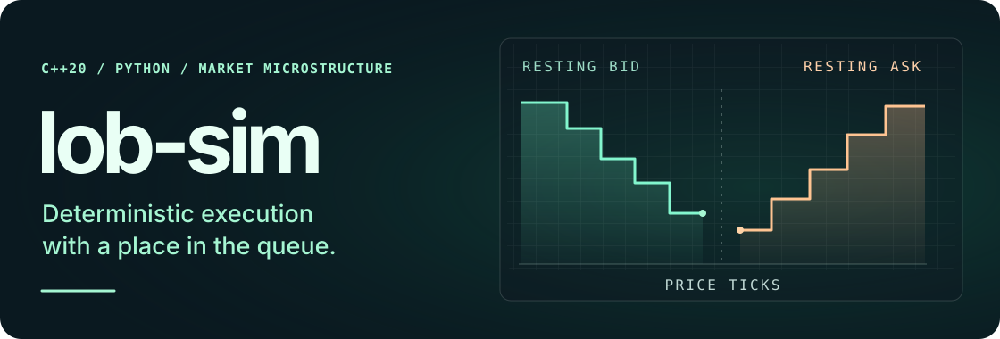

c++20 / python / market microstructure
Replay the market. Test your place in the queue.
A deterministic C++20 limit order book with price-time FIFO, CSV and binary replay, and a queue-aware Python environment.

Match
Submit limit and market orders to an integer-tick C++20 engine. Inspect price levels, individual orders, and FIFO position.
Replay
Stream equivalent CSV and binary sessions through the same matcher. Inspect fills and statuses, with record-level diagnostics for malformed input.
Simulate
Use seeded BookEnv episodes with queue information, inventory, and PnL. Read observations as zero-copy, contiguous NumPy arrays.
Quickstart
Ubuntu 24.04 · CPython 3.10 or 3.12 · C++20 compiler and CMake for a source build
git clone https://github.com/rishixgamer/lob-sim.git
cd lob-sim
python3 -m venv .venv
. .venv/bin/activate
python -m pip install .
python -m lob_sim --replay fixtures/continuous/session.csvThe example quotes a buy, receives a partial fill, cancels the remainder, and then replays a normalized event fixture.
10 million events on one thread
On the v1.0.0rc1 candidate, the seeded synthetic workload completed in 1.264 s on ARM64 and 1.657 s on x86_64, with peak RSS below 14 MB on both runners.
Ubuntu 24.04 CI · native release build · synthetic event stream Candidate benchmarks and wheels ↗